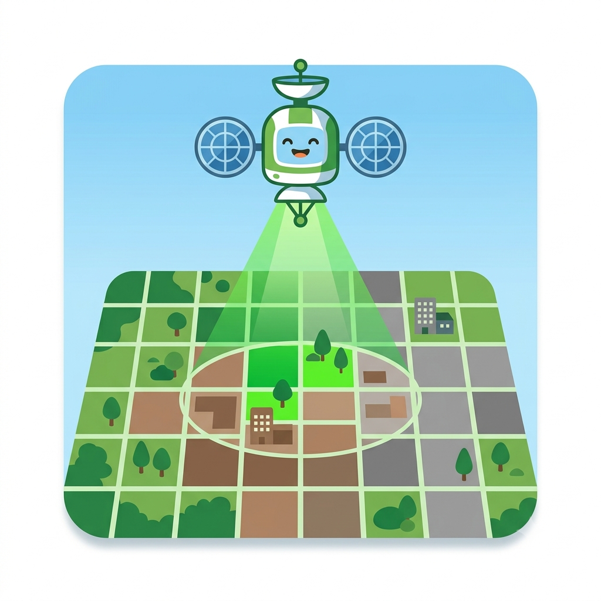
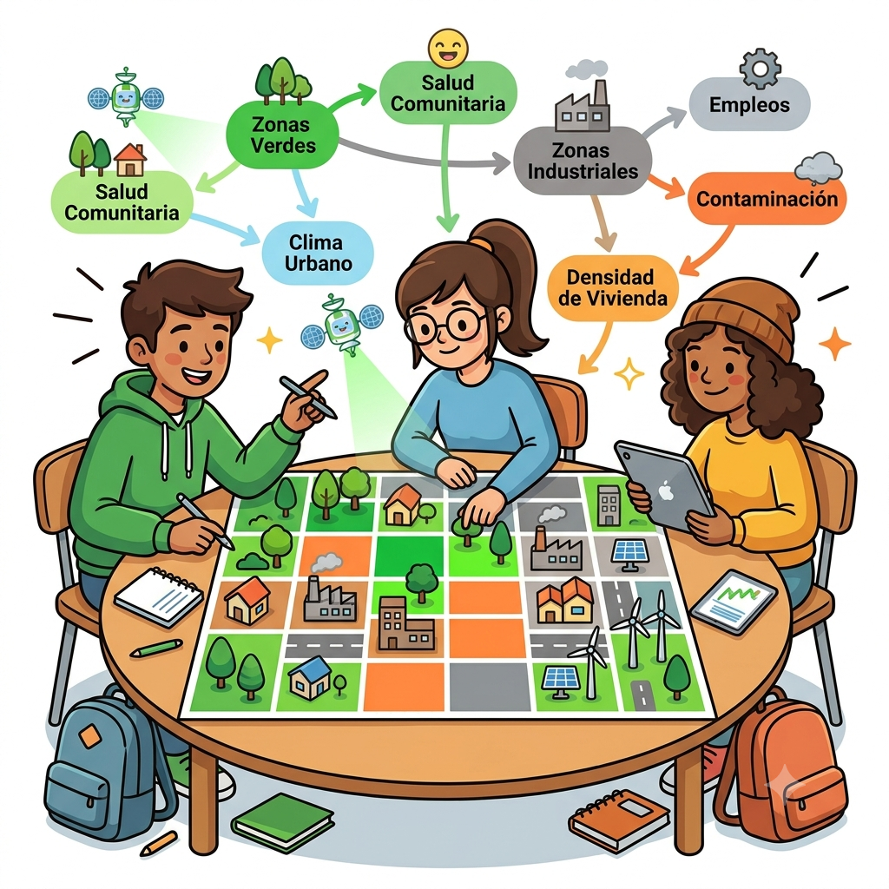
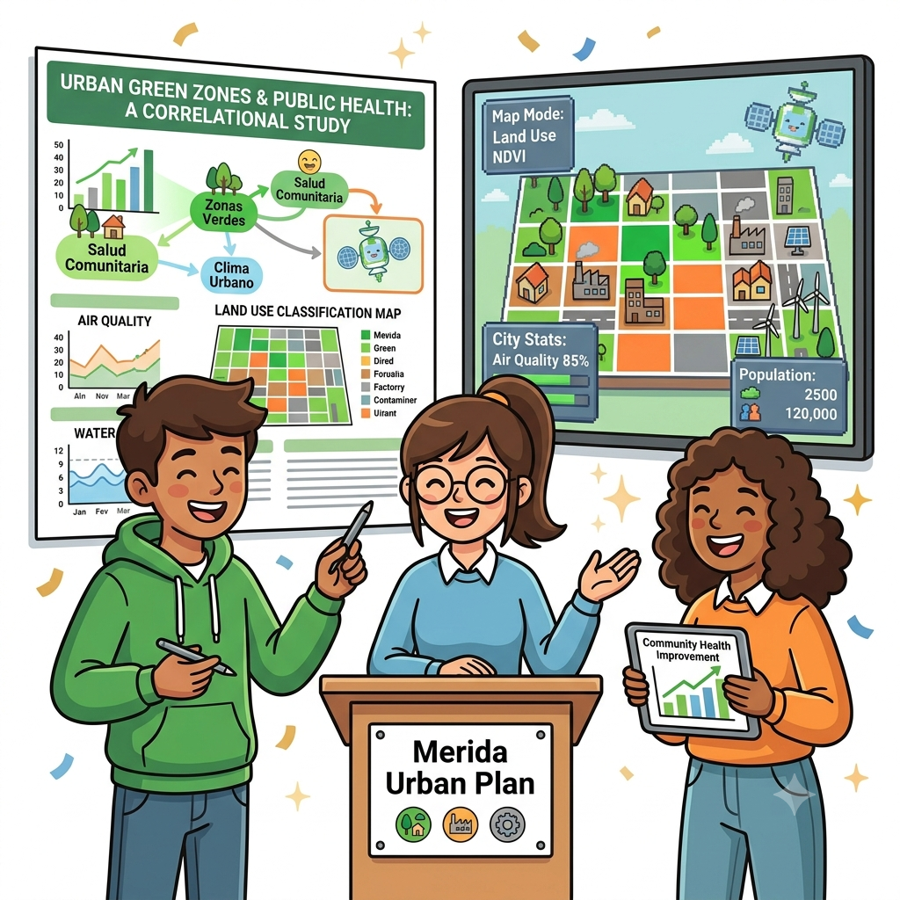

Estructura del curso

1Imágenes Satelitales
Resoluciones, proyecciones, NDVI y análisis multitemporal.

2Modelación y Gamificación
Diagrama causal → simulación en Python → prototipo de videojuego → escenarios jugables.

3Proyecto Final
Datos reales, personalización, testing y presentación final.
🛰️ Sección 1 — Imágenes Satelitales
En estas actividades los estudiantes aprenden a mirar la Tierra desde el espacio: qué es una imagen satelital, qué información contiene y cómo interpretarla, empezando por lugares que ya conocen y quieren.
Mapeo satelital de tu ciudad
De un punto en el mapa a un área de estudio real: imágenes de Sentinel-2 y datos censales del INEGI para tu ciudad.
Presentación — Sesión 1
Introducción al curso y a las imágenes satelitales: qué ven los satélites y por qué nos sirven para entender nuestra ciudad.
Percepción remota: cómo "ven" los satélites
Explorador interactivo: espectro electromagnético, bandas, reflectancia, resolución espacial y cuantización.
Collage de lugares favoritos
Cada estudiante toma una foto satelital de su lugar favorito y la comparte con el grupo; luego discutimos juntos qué vemos en las imágenes.
Presentación — Sesión 2
Profundizamos en el análisis de imágenes satelitales: resoluciones, bandas e índices como el NDVI para detectar vegetación y cambios en el tiempo.
Distorsión, proyecciones y planeación urbana
Explorador interactivo: distorsión por ángulo de satélite, proyecciones cartográficas, planeación urbana y comparación multitemporal.
🧠 Sección 2 — Modelación y Gamificación
Del diagrama causal del pintarrón a un modelo matemático que corre como código, y de ahí a un prototipo jugable: en estas sesiones los estudiantes construyen el motor de su videojuego.
Presentación — Modelación y juegos serios
Qué es un sistema, tipos de modelos matemáticos, la actividad del "algoritmo humano" (clasificación satelital con personas) y el vínculo entre modelos, satélites y cambio climático.
Formalización del modelo mental
Variables, rangos, relaciones y ciclos de retroalimentación a partir del diagrama causal.
Simulación numérica y prototipo de videojuego
Explorador interactivo: de un diagrama causal a una simulación numérica en Python, y de la simulación a un prototipo de interfaz pintable.
Simulación numérica en Python
Clase EcosistemaUrbano con NumPy: traduce el modelo mental a una simulación funcional.
Prototipo del videojuego
Mapa/tablero interactivo con controles básicos, conectado a la simulación numérica.
Escenarios y mecánicas de juego
3 escenarios jugables, decisiones con consecuencias y sistema de indicadores.
🚀 Sección 3 — Proyecto Final
El proyecto final integra todo lo trabajado en el curso: un modelo matemático del sistema ecológico-urbano que corre como código, conectado a un componente espacial que representa el espacio real de tu ciudad. Usar datos satelitales reales (Sentinel-2, NDVI) suma puntos pero ya no es obligatorio — lo que sí es obligatorio es que el modelo y el mapa/atributos de la ciudad estén conectados.
- Usen la Bitácora de Sprint de abajo en cada sesión de los Días 3 y 4 para llevar el control de tareas, responsables y estado.
- Antes de avanzar de fase, revisen los dos requisitos no negociables (modelo matemático y componente espacial) — sin ellos el prototipo no cuenta como simulación.
- Usen la rúbrica de calidad científica para autoevaluarse; el umbral para avanzar a la integración final (Día 4 tarde, Notebook 5) es 7/10.
- El instructor llena el checkpoint al final de cada sesión con un semáforo (🔴 detener / 🟡 ajustar / 🟢 avanzar) antes de que el equipo pase a la siguiente fase.
- El viernes presentan la versión beta pulida del videojuego junto con una reflexión individual sobre el proceso.
Bitácora de Sprint: Videojuego Serio
Formato imprimible/editable con requisitos no negociables, rúbrica de calidad científica, backlog por sesión y checkpoint del instructor.
Integración de datos satelitales reales
NDVI real como condición inicial del juego, narrativa y versión alpha del proyecto final.
Crea tu videojuego con IA (HTML)
Diseñen prompts para Claude o Gemini que generen un videojuego jugable en HTML/CSS/JavaScript — programar dirigiendo a una IA en vez de escribir cada línea.
🔊 Recursos adicionales
NotebookLM del curso
Explora, escucha (resumen en audio) y pregúntale a la IA sobre los materiales del curso — útil para repasar antes de cada sesión o resolver dudas del programa.
¿Qué es Google Colab?
Introducción rápida a Google Colab, el entorno donde correrán todos los notebooks del curso.
¿Qué es Python?
Introducción al lenguaje de programación que usaremos durante todo el curso.
Datos censales (INEGI)
Carpeta de Google Drive con los datos de censo (población, vivienda) que usarán en el notebook 0 y en la Sección 3.
Copernicus Browser
Explorador oficial de imágenes satelitales Sentinel de la Agencia Espacial Europea — útil para explorar tu ciudad antes de trabajar en los notebooks.
Crea tu cuenta de GitHub
Necesitas una cuenta gratuita de GitHub para acceder al código y los notebooks del curso.
👩🏫 Instructores

Emma Ross
Emma Ross es una científica de datos en formación, involucrada en investigaciones de analítica aplicada con enfoque en sistemas urbanos y desarrollo urbano alrededor del mundo. Actualmente estudia su doctorado en Ciencias de Datos en la Universidad de Chicago, en Chicago, Illinois. Previamente estudió Matemáticas y Español para su licenciatura en San Antonio, Texas, y Estadística para su maestría en Philadelphia, Pennsylvania. Emma es apasionada por que los jóvenes aprendan sobre todas las aplicaciones de las matemáticas y por ayudarles a superar el miedo hacia ellas, especialmente en el caso de niñas y mujeres jóvenes.
Fuera de la oficina, puedes encontrar a Emma en la discoteca bailando salsa, bachata, cumbia, merengue ¡y más! O en un ensayo de su conjunto de percusión afrocubana. Si no logras contactarla, puede que esté en el bosque haciendo senderismo o acampando, o en un vuelo hacia una nueva parte del mundo. En cada faceta de su vida, se dedica a entender y conocer otras formas de vivir, culturas y lugares.

Ricardo Cavieses
Ricardo Cavieses es un científico marino de La Paz que combina la investigación oceanográfica con una buena dosis de aventura. Es doctor en Ciencias Marinas, profesor-investigador en la UABCS y trabaja con datos e inteligencia artificial en CEDO Intercultural, usando satélites y modelos para entender mejor el Golfo de California y ayudar a la pesca sustentable. Fue coordinador de Clubes de Ciencia México en La Paz, contagiando su pasión por la ciencia a jóvenes de la región.
Fuera del laboratorio, a Ricardo le encanta surfear, bucear y subirse a un escenario de teatro (ya lleva más de 13 obras). Últimamente descubrió un nuevo hobby: la fotografía. Es fan declarado de Star Trek y devorador de los libros de Isaac Asimov, así que entre ciencia real y ciencia ficción, no hay quien lo pare.
🧰 Requisitos
Computadora con acceso a internet y navegador web, más una cuenta de Google (para Google Colab) o Python instalado localmente con VSCode. No se requiere experiencia previa en programación.